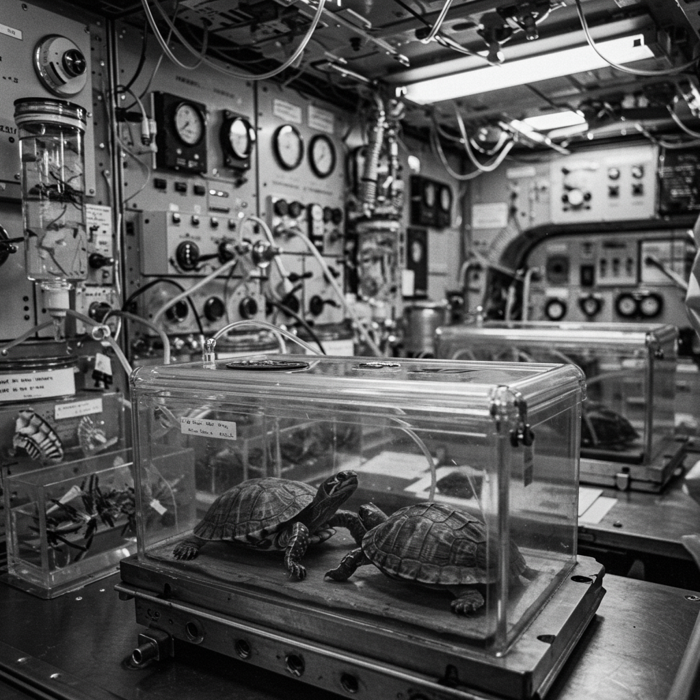

Zond 5
Datos Técnicos
- Nombre de la misión: Zond 5
- Programa: Zond (URSS)
- Fecha de lanzamiento: 15 de septiembre de 1968
- Vehículo de lanzamiento: Proton-K
- Duración total: 6 días
- Distancia máxima desde la Tierra: ~384,000 km
- Recuperación: Océano Índico, recogida por la URSS
Misión
Zond 5 fue la primera nave en llevar organismos vivos alrededor de la Luna y traerlos de regreso con vida a la Tierra. A bordo viajaban tortugas, moscas de la fruta, lombrices, plantas, semillas y bacterias. El objetivo era simular una futura misión tripulada, probando trayectorias translunares, protección biológica y reentrada.
Impacto Histórico
La misión fue un logro técnico crucial para la URSS. Aunque no llevaba humanos, su éxito probó la factibilidad de circunnavegar la Luna y regresar. Fue vista como una advertencia directa al programa Apolo estadounidense. Las imágenes tomadas del lado lejano lunar ayudaron a preparar futuros vuelos. Las tortugas soviéticas, al igual que Laika, se convirtieron en símbolos vivientes de la carrera espacial.
⬅ Regresar al Archivo X